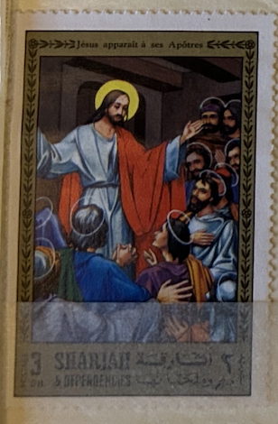
| SOURCE | TITLE| IMAGE MATCH | click to source page |
| Etsy | The Catholic Children's Bible by Sister Mary Theola Illustrations by J. Verleye Old & New Testament Published 1983 by the Regina Press NY - Etsy | 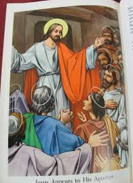 |
| S... - St. John The Evangelist Catholic Church, Ladipo, Oshodi | 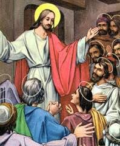 | |
| cappamore.ie | Church Notes and Anniversaries for Fifth Sunday of Easter | Cappamore /An Cheapach Mhór | 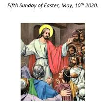 |
| Etsy | The Catholic Children's Bible by Sister Mary Theola Illustrations by J. Verleye Old & New Testament Published 1983 by the Regina Press NY - Etsy Canada | 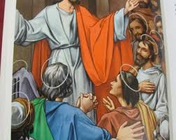 |
| ArtHub.ai | Search Results for jesus - Arthub.ai | 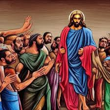 |
| eBay | ANTIQUE 19c HAND PAINTED RUSSIAN ICON OF " KISS OF JUDAS " (36549) | eBay | 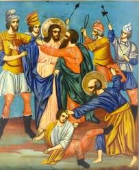 |
| MetaFilter | Public Domain Jesus - vintage religion art | Ask MetaFilter | 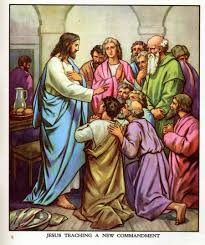 |
| And He said to her, “Daughter, your faith has made you well. Go in peace, and be healed of your affliction.” Mark 5:34 #copticicons #coptic #icons #christian #art | 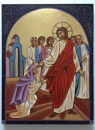 | |
| Live Orthodoxy | Χριστός Ανέστη!!! Sunday of Thomas The Gospel According to John 20:19-31 On the evening of that day, the first day of the week, the doors... | Instagram | 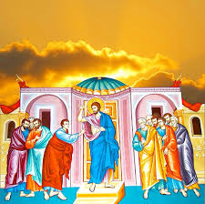 | |
| WordPress.com | xabi alonso | The Sportboys | 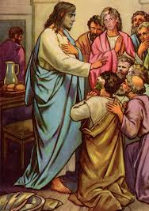 |
| UB David | Jesus Understands | Know Your Bible Level 3 Lesson 18 Scripture | 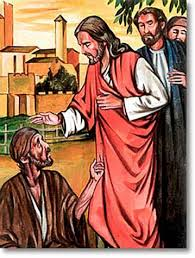 |
| Medium | A Time of Parables and Preparation: Pre-Lent with T. Noyes-Lewis | by Richard Mammana | Medium | 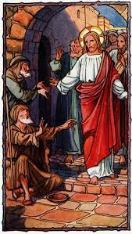 |
| Bridgeman Images | Image of Painting. Jesus Christ resurrected, Aneho, Togo | 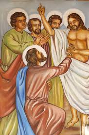 |
| lastdodo.com | The life of Jesus 4 (1971) - Sharjah - LastDodo | 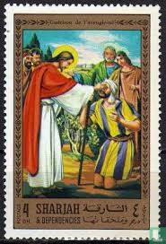 |
| Threads | Photo posted by أقوال القديسين (@jesus.saints.prayers) | 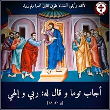 |
| St. Jonah Orthodox Church | Thomas Sunday Second Sunday of Pascha | 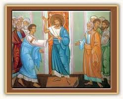 |
| Resene | Jesus Heals The Blind Man | Total Colour Awards | 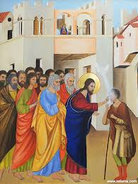 |
| Amazon.com | Amazon.com: Raising of Lazarus icon, Handmade Greek Orthodox icon, Byzantine Art Wall Hanging of Our Lord Rising from The Dead, Religious Decor 11x15cm : Home & Kitchen | 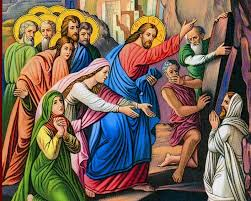 |
| Creazilla | 113 The Ten Virgins (1905) - Traditional visual art under Public domain license | 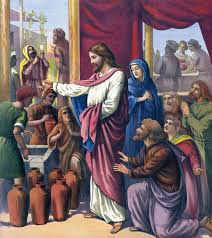 |
| Creazilla | 22 The Paralytic let down through the Roof (color) - Traditional visual art under Public domain license | 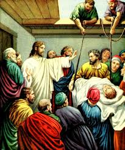 |
| St Verena Church | Seasonal Icons - Thomas Sunday | St Verena Church | 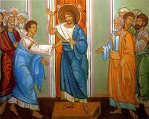 |
| eBay | Christian Picture Lessons Antique Religious Card Jesus Appears Apostles 1908 | eBay | 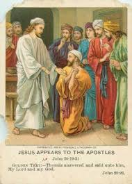 |
| What was Jesus' response when urged to eat? | 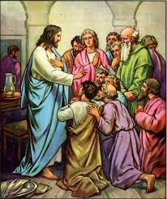 | |
| What is the key to receiving God's promises in the Bible? | 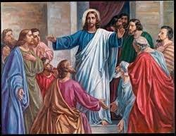 | |
| LiveAuctioneers | Old Icons Sale 16th - 19th Century 2020-06-02 Auction - 53 Price Results - Milatz Auktions Netherlands in NL | 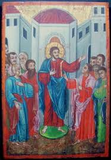 |
| Bible Art | The Mustard Seed Artwork | Bible Art | |
| S.D. Cason Catholic Gallery | Jesus appoints Peter as head of the church. Chromotypograph. (Unknown date and author) - Public Domain Catholic Painting | 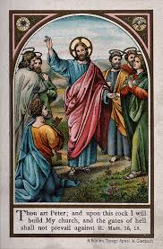 |
| New Sunday, also known as Thomas Sunday or Anti-Pascha, marks the day when Thomas initially doubted Christ's resurrection. From this day forward, the Church dedicates Sundays to celebrating the Resurrection. Jesus appeared | 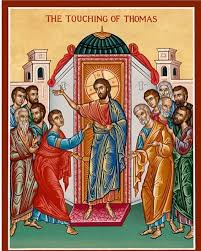 | |
| corningucc.org | Sermons | First Congregational United Church of Christ | 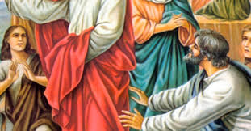 |
| Bridgeman Images | Image of Painting. Jesus Christ and Saint Thomas, Aneho, Togo | 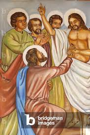 |
| Ruslana Tymchuk (rtymchuk) - Profile | Pinterest | 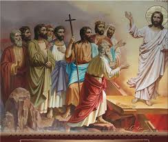 | |
| Roman Catholic Diocese of Peterborough | Diocesan Pastoral Plan | 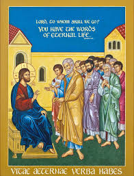 |
| Clipart Library | Free Jesus Teachings, Download Free Jesus Teachings png images, Free ClipArts on Clipart Library | 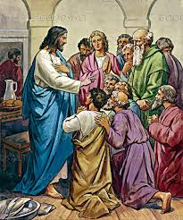 |
| eBay | 13 BIBLE SCENES Angels Jesus Adam Eve Saints Mary 1898 COLOR LITHO 8x10 PR | eBay | 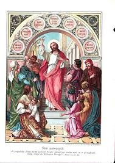 |
| purechristians.org | New Sermons, Poetry, Writings of Preacher Doc | 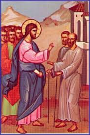 |
| Bible Art | The Pharisees Artwork | Bible Art | 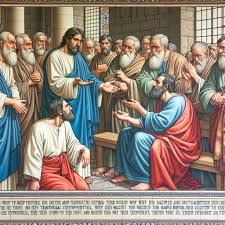 |
| noelchristopher.co.uk | Jesus last Statement | 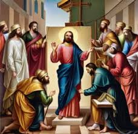 |
| daily-prayers.org | 1. Jesus is Condemned to Death | DAILY PRAYERS | 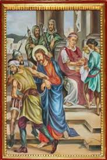 |
| eBay | AC0711 Jesus Blindfolded, Percosso And Schernito, Card Postal, Vintage Postcard | eBay | 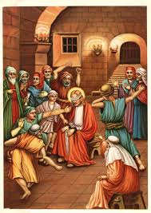 |
| stceciliaharvey.org | Bill Dempsey Mike Waldoch Bank of Harvey FEBRUARY 20, 2022 SEVENTH SUNDAY IN ORDINARY TIME | 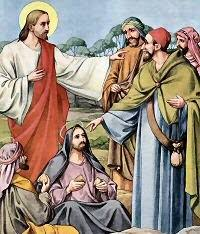 |
| X | On #AscensionDay, we celebrate that Jesus Christ was taken into heaven not only in spirit, but with his human body. This is a profound sign: our bodies matter. The protection of #Health | 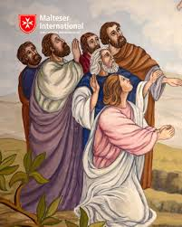 |
| kingston.on.ca | Celebrating our 200th ANNIVERSARY | Archdiocese of Kingston | Kingston, Ontario | 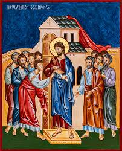 |
| What is the condition of your Christian life? | 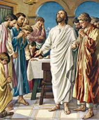 | |
| Fr. Peter Preble | Sermon: 7th Sunday after Pentecost ~ And their eyes were opened – Rev. Peter M Preble | 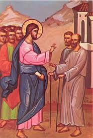 |
| Chairish | Antique Religion Illustration of the Tribute Money, 1913, Print | Chairish | 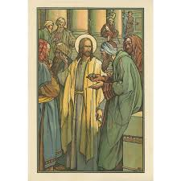 |
| Reflections on advent and faith | 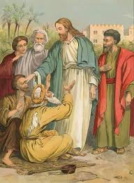 | |
| stories.email | Christian Hypocrites - by Terry Trueman | |
| Walmart | 36 in. The Last Supper Art Print - Heinrich Hofmann - Walmart.com | 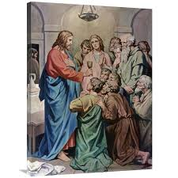 |
| Tumblr | Loaves & Fishes' in Global Art – @globalworship on Tumblr | 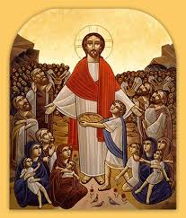 |
| Greek Orthodox Archdiocese of Zahle and Baalbek and Dependencies (@GreekOrthodoxArchdiocesesOfZahle) • Facebook | 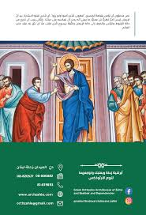 | |
| وقال لهم: سلام لكم #NoursatNetwork #نورسات www.noursat.tv | 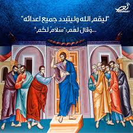 | |
| Philip Williams Posters | Jesus erscheint den Jüngern Poster – Poster Museum | |
| antiochpatriarchate.org | The Sunday of Saint Thomas - Greek Orthodox Patriarchate of Antioch and All the East | |
| March 6th is The 'Second Sunday of the Great Lent' and Healing of the Leper (had'bshabo trayono d'sawmo, al garbono) according to the liturgical calendar of the Syriac Orthodox Church in Malankara | ||
| FIFTH SUNDAY AFTER THE FEAST OF THE HOLY CROSS (Oct 13, 2024) “He who is greatest among you shall be your servant” The theme of St. Matthew 23:1-12 revolves around the idea | ||
| Morning Prayer for Thursday in the Octave of Easter INVITATORY Lord, open my lips. — And my mouth will proclaim your praise. Ant. The Lord is risen, alleluia. Psalm 95 Come, let | ||
| apricelessthing.com | mary | A priceless thing… | |
| Creazilla | 111 Matthew 21 v01-09 Jesus riding into Jerusalem (anon 1905) - Traditional visual art under Public domain license | |
| Progressive Church Media | Sermon on the Mount Stock Images - Progressive Church Media | |
| Coptic Orthodox Metropolis of the Southern United States | 2ND ISSUE |